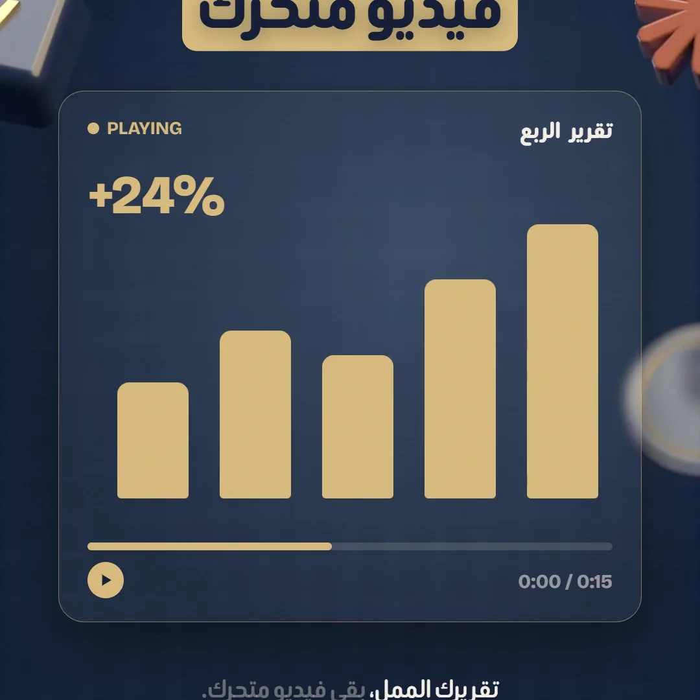
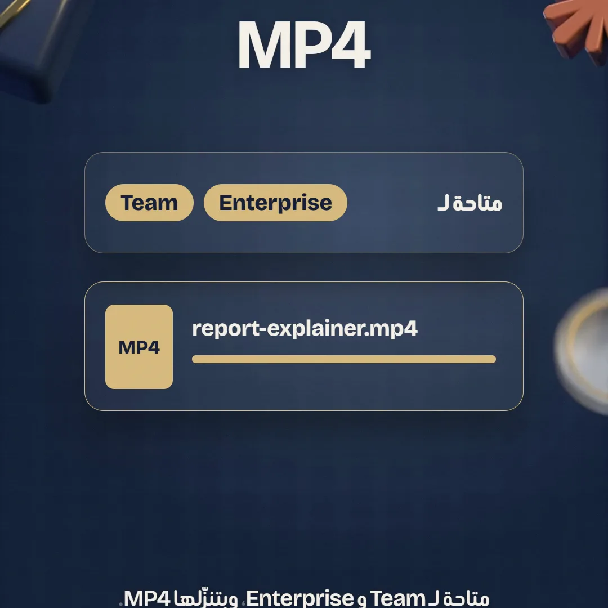
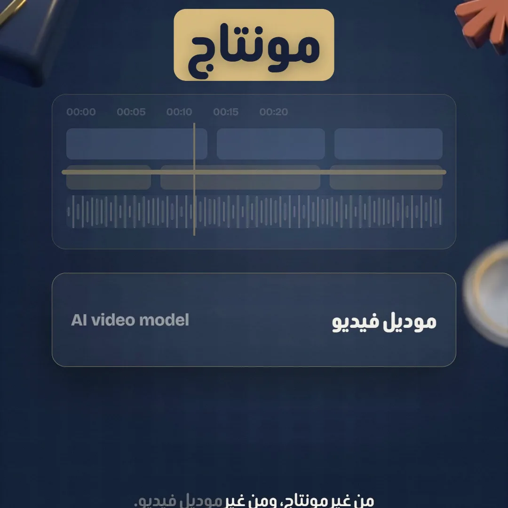
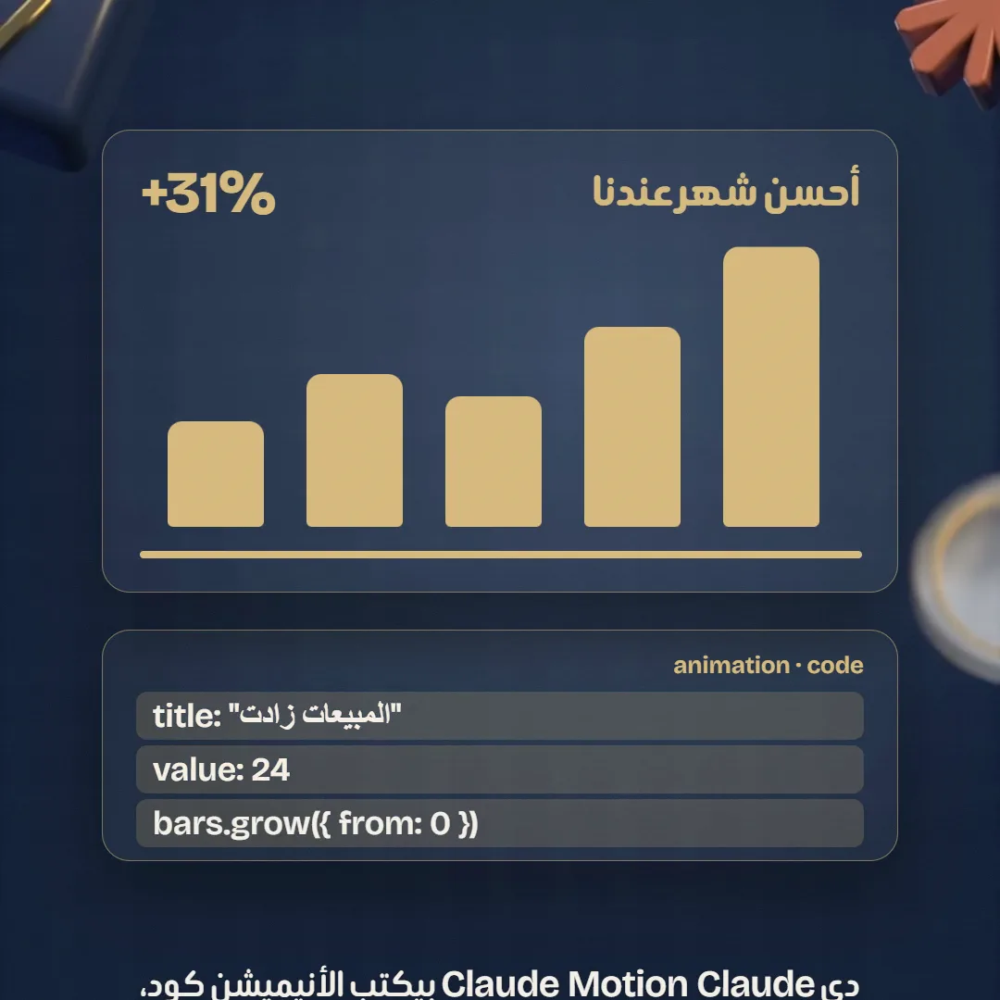

تقريرك بقــىفيديو متحـــرك
Claude Motion ميزة بيتا من Anthropic (نزلت يوم 8 أكتوبر 2026 مع Claude Dashboards): بتحوّل تقرير أو شارت أو شرح منتج لفيديو قصير متحرك. Claude بيكتب الأنيميشن كود، من غير موديل فيديو، فتقدر تعدّل الكلام والأرقام والتوقيت، وبعدين تنزّله MP4.


- 01
الميزة بالظبط
Claude Motion بتعمل فيديوهات شرح قصيرة متحركة من الداتا والتقارير. الفرق إن Claude مش بيولّد لقطات فيديو ولا ناس بالـ AI: بيكتب كود بيحرّك الكلام والشارتات والأشكال والصور. علشان كده كل حاجة فيه تفضل قابلة للتعديل بعد ما يخلص.
خبر Digital Trends (8 أكتوبر 2026) ↗
من الريل: تقرير ثابت بيتحوّل لفيديو متحرك - 02
اتأكد من خطتك
الميزة متاحة لخطط Team و Enterprise بس، ولسه بيتا. لو إنت على Enterprise هتلاقيها مقفولة افتراضيًا: الأدمن يفتحها من Organization settings ← Artifacts. على Pro أو Max لسه مش متاحة لحد دلوقتي.

من الريل: متاحة لـ Team و Enterprise، وبتنزّلها MP4 - 03
اطلب الفيديو
في شات Claude، ارفع التقرير أو الشارت أو اكتب الأرقام، واطلب فيديو شرح قصير متحرك. كل ما تكون واضح في الطول والجمهور والرقم المهم، النتيجة بتبقى أحسن.
Turn this report into a 15-second animated explainer for Instagram: vertical 9:16, one big number per scene, our brand colors, end on the main takeaway.
من غير برنامج مونتاج، ومن غير موديل فيديو - 04
عدّل ونزّل MP4
عدّل في المحرر أو اكتب لـ Claude التعديل (غيّر العنوان، الرقم، التوقيت). لما يعجبك نزّله MP4، أو كمّل عليه في أدوات تانية: المصادر بتذكر Adobe و Canva و Runway و Luma.
خبر TestingCatalog (8 أكتوبر 2026) ↗
من الريل: الكلام والأرقام بيتغيّروا والفيديو بيتبعهم
نصايح صغيرة
- دي ميزة بيتا: الشكل والإتاحة ممكن يتغيّروا في أي وقت.
- مفيش لقطات متولّدة ولا ناس بالـ AI: لو محتاج تصوير حقيقي أو موشن فيديو كامل لبراندك، ده شغل تاني.
- عايز فيديو متحرك لبراندك جاهز؟ ابعتلي على الواتساب وأقولك السعر حسب اللي محتاجه.